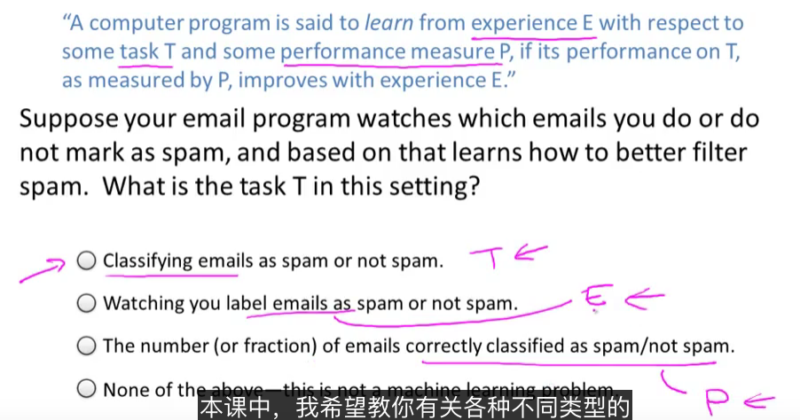

1 概念
A computer program is said to learn from experience E with respect to some task T and some performace measure P,if its performance on T,as measured by P,improves with experience E.
In general, any machine learning problem can be assigned to one of two broad classifications:
Supervised learning and Unsupervised learning.

机器学习算法分类： 监督学习，非监督学习
注意：理解各种定义以及什么场景使用何种算法。
2 分类
2.1 监督学习
部分数据有正确结果，有标记
In supervised learning, we are given a data set and already know what our correct output should look like, having the idea that there is a relationship between the input and the output. Supervised learning problems are categorized into "regression" and "classification" problems. In a regression problem, we are trying to predict results within a continuous output, meaning that we are trying to map input variables to some continuous function. In a classification problem, we are instead trying to predict results in a discrete output. In other words, we are trying to map input variables into discrete categories.
回归问题-regression输出结果连续值 例如：房价预测，
分类问题-classification-输出结果离散值 输入-特征值，例如是否会患肿瘤预测 支持向量机
2.2 无监督学习
所有数据一样或类似，无明显标记
Unsupervised learning allows us to approach problems with little or no idea what our results should look like. We can derive structure from data where we don't necessarily know the effect of the variables.
We can derive this structure by clustering the data based on relationships among the variables in the data.
聚类算法：Clustering
例如：基因分析，社交网络分组，天文数据分析
鸡尾酒会算法：非聚类 Non-clustering
例如：复杂环境下人声提取
备注工具：Octave内置很多算法，预研算法是否合适，用来开发原型 Svd-奇异值分解